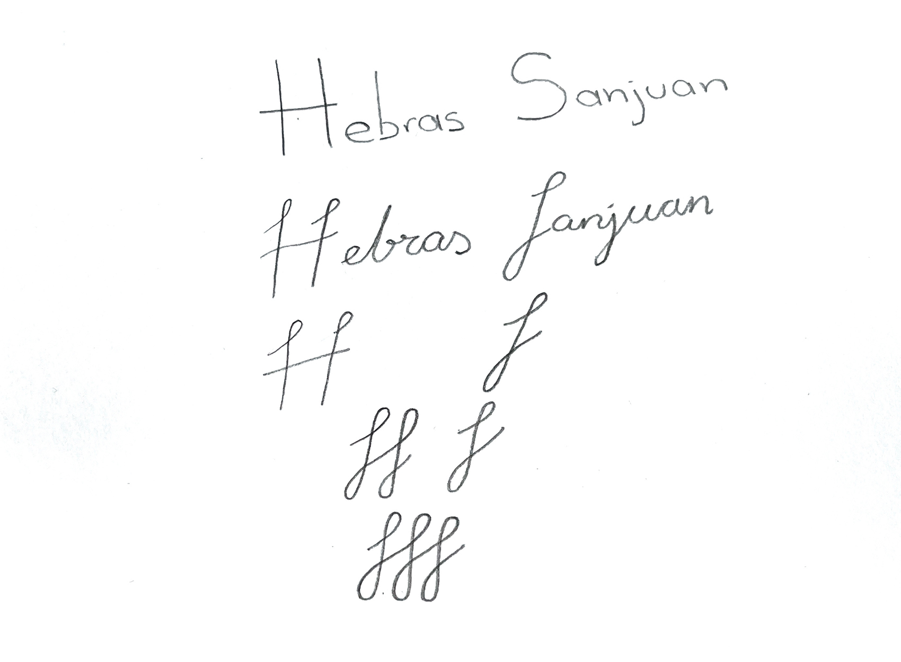
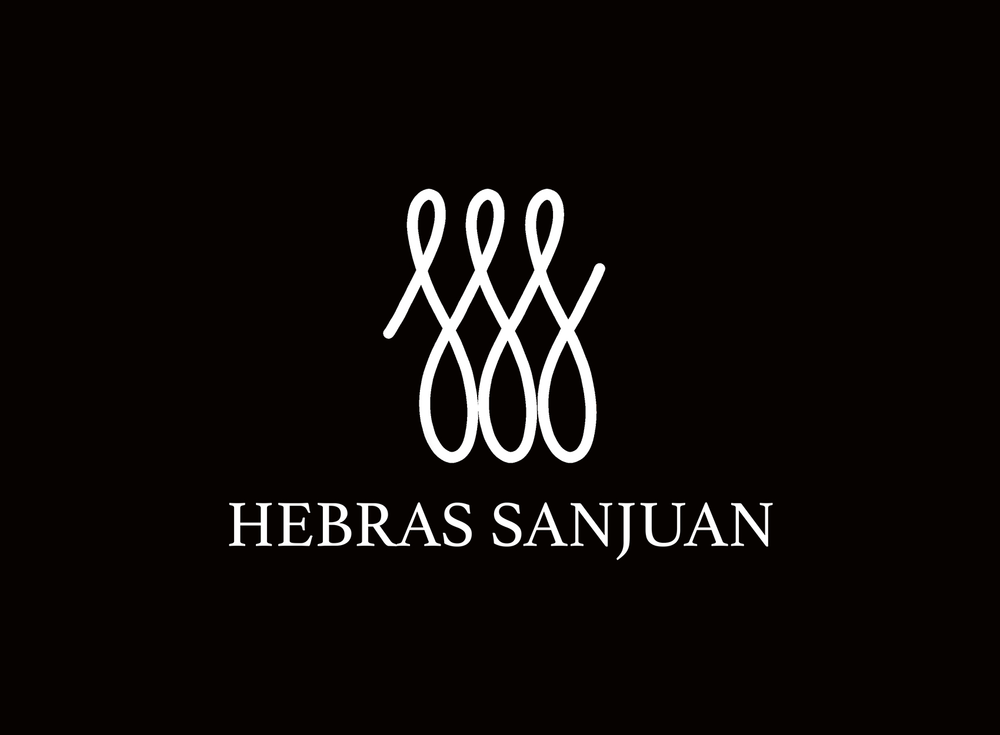
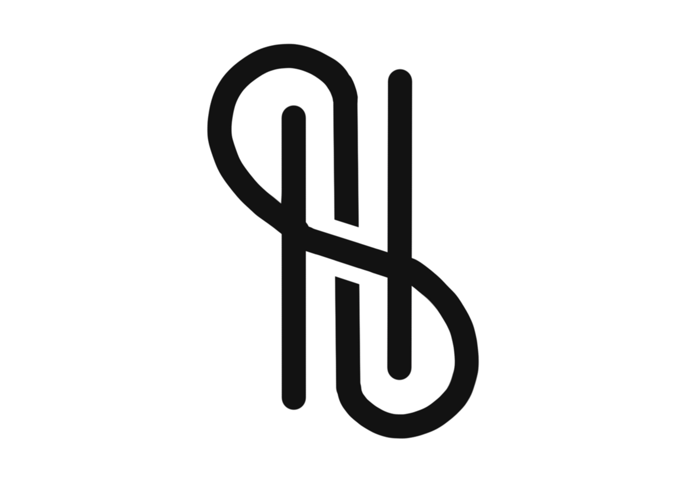

Hebras Sanjuan
Mon rôle: Conception du logotype.
Hebras Sanjuan est une marque textile colombienne qui rassemble l’artisanat et le luxe ; ils cherchent à se présenter au monde, pas seulement comme une marque, mais comme une grande famille, ouverte à tous. Inspirée par le côté humain de l'écriture manuscrite, j'ai simplifié et uniformisé les lettres “H” et “S” pour avoir un visuel facilement déclinable. Il représente à la fois le passage d’un fil de couture, et le lien fraternel entre les trois propriétaires (une mère et ses deux filles).


